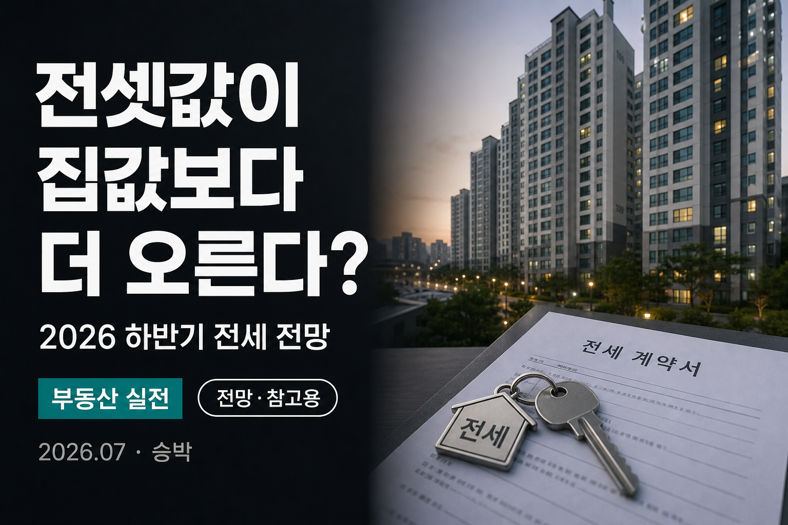

전셋값이 집값보다 더 오른다? 2026 하반기 전세 전망 정리
확정이 아니라, 여러 기관의 전망·예측을 비교해 보는 글입니다

2026년 하반기를 앞두고 “전셋값이 집값보다 더 오른다”는 이야기가 자주 들립니다. 다만 이 문장은 확정된 사실이 아니라, 여러 기관의 전망·예측에 가깝습니다. 이 글은 그 전망이 얼마나 나오는지, 왜 그렇게 보는지, 세입자·집주인이 무엇을 점검하면 좋은지를 참고용으로 정리합니다.
먼저 읽어주세요
아래 상승률·배경 설명은 기관·매체마다 숫자가 다를 수 있는 예측입니다. 실제 시장은 금리·정책·지역·수급에 따라 다르게 움직일 수 있습니다. 투자·계약 권유가 아니며, 의사결정 전 최신 자료와 전문가 상담을 권합니다.
- 전세 상승률이 매매보다 높게 잡힌 전망 범위를 도표로 비교합니다.
- 공급 부족·역전세·대출 규제·매물 감소 등 거론되는 배경을 정리합니다.
- 세입자·집주인 관점의 체크포인트를 나눠 봅니다.
전세가 오른다는 전망, 얼마나 나오나
2026년 들어 여러 전망에서 공통으로 눈에 띄는 문장이 있습니다. 전세가격 상승률이 매매가격 상승률보다 크게 높을 수 있다는 관측입니다. 기관별로 차이는 있지만, 전세는 대략 연 4~5%대, 매매는 0.8~2.5%대 수준으로 상승을 점치는 전망이 자주 인용되고 있습니다. 한국건설산업연구원 등에서는 전국 전세 약 5.0%, 매매 약 2.5%처럼 “전세가 매매의 두 배 수준”으로 오를 수 있다는 그림을 제시한 바 있습니다.
여기서 중요한 건 두 가지입니다. 첫째, 숫자는 전국·연간 평균 전망에 가깝고 지역·단지별로 체감이 다를 수 있습니다. 둘째, 전망은 시나리오이며, 금리·대출·세제·입주 일정이 바뀌면 결과가 달라질 수 있습니다. “올해 전세가 무조건 5% 오른다”고 단정할 수 없다는 뜻입니다.
그럼에도 하반기 임대시장 경고가 여러 매체에서 반복되는 이유는, 매매가 완만하더라도 전·월세 부담이 먼저 커질 수 있다는 메시지 때문입니다. “전월세가 집값보다 더 뛴다”는 표현은 그런 상대 비교에서 나온 관측으로 읽히는 경우가 많습니다.
전망을 읽을 때는 “상승한다”보다 “얼마나, 어디서, 왜”를 같이 보는 편이 덜 흔들립니다. 수도권과 지방, 신축 입주가 많은 권역과 적은 권역은 온도 차가 날 수 있습니다. 내 생활권 실거래·전세 호가는 실거래가 지도로 최근 흐름을 따로 확인하는 습관이 도움이 됩니다.
또한 전세가 오르면 월세 전환·보증금 부담 증가로 이어질 수 있다는 관측도 함께 나옵니다. 전세 매물이 부족하면 임차인이 월세로 이동하거나, 보증금을 더 올려야 하는 압박이 생길 수 있다는 설명입니다. 반대로 전세가율이 과도하게 높아지면 보증금 안전성 이슈가 다시 부각될 수 있어, 가격만 보지 말고 전세사기 예방 체크리스트의 안전 점검도 병행하는 편이 좋습니다.
전망 숫자를 볼 때 자주 생기는 오해가 있습니다. “연 5%”를 “다음 달 당장 5%”로 읽는 경우입니다. 연간·하반기 전망은 기간을 나눠 누적되는 그림에 가깝고, 단기 호가 체감과는 결이 다를 수 있습니다. 계약 갱신 주기가 2년이라면, 그 사이 누적 상승과 일시적 급등을 구분해 보는 편이 덜 흔들립니다.
또 하나, 전국 평균과 내 단지의 온도는 다를 수 있습니다. 대규모 입주가 예정된 권역은 전세가 상대적으로 숨 고를 여지가 있고, 입주가 얇은 생활권은 호가가 더 단단해질 수 있다는 관측이 있습니다. 그래서 전망 기사를 읽은 뒤에는 반드시 내 생활권 매물·실거래로 내려와 확인하는 습관이 필요합니다.
매체에서 “전월세가 집값보다 더 뛴다”고 경고하는 맥락도 비슷합니다. 매매가 완만해도 임차 부담이 먼저 커지면, 가계 현금흐름·주거 불안이 커질 수 있다는 메시지입니다. 반대로 전세가 오르면 일부 수요가 매수로 이동해 매매를 떠받칠 수 있다는 연결 고리도 거론됩니다. 어느 쪽이든, 지금은 확정이 아니라 시나리오의 화살표로 보는 편이 안전합니다.
왜 오른다고 볼까
전세가 매매보다 더 오를 수 있다고 보는 배경은 대체로 네 갈래로 묶입니다. 입주 물량 부족, 역전세 우려, 전세대출 규제, 전세 매물 감소입니다. 각각이 단독으로 시장을 결정한다기보다, 겹쳐 거론되는 요인에 가깝습니다.
1. 입주·공급 부족
과거 착공 감소 여파로 입주 물량이 줄어 전세 공급 압력이 커질 수 있다는 전망이 많습니다.
2. 역전세 우려
보증금 반환 부담·위험 인식이 커지면 전세 공급이 위축되거나 조건이 까다로워질 수 있다는 관측이 있습니다.
3. 전세대출 규제
대출 한도·심사 강화가 이어지면 임차 수요·거래 방식이 바뀌고, 일부 구간에서 가격 압박이 커질 수 있습니다.
4. 전세 매물 감소
양도세 중과 유예 종료 등으로 매물이 줄었다는 해석과 함께, 전세 물건 자체가 부족해질 수 있다는 경고가 나옵니다.
입주 물량 부족은 가장 자주 언급되는 축입니다. 몇 년 전 착공이 줄면, 그 여파가 2~3년 뒤 입주 감소로 나타날 수 있습니다. 신규 입주가 줄면 전세 공급이 얇아지고, 같은 수요라도 호가가 단단해질 수 있다는 논리가 흔합니다. 다만 단지·권역마다 입주 캘린더가 달라, “전국이 한꺼번에”는 과장일 수 있습니다.
역전세 우려는 집주인 입장에서 보증금 반환이 부담스러운 상황을 가리킵니다. 우려가 커지면 전세를 내놓기보다 월세로 돌리거나, 조건을 까다롭게 잡는 움직임이 관측되기도 합니다. 임차인에게는 매물 선택지가 줄어드는 압력으로 이어질 수 있다는 해석이 있습니다.
전세대출 규제는 수요와 거래 방식을 동시에 건드립니다. 대출이 빡빡해지면 일부 수요는 월세로 이동하고, 일부는 보증금을 더 올려서라도 전세를 유지하려 할 수 있습니다. 규제의 세부 내용·적용 시점에 따라 체감이 달라지므로, 뉴스 제목만으로 단정하기는 어렵습니다.
전세 매물 감소는 세제·매매 심리와도 연결됩니다. 양도세 중과 유예가 끝나거나 매도 유인이 바뀌면, 일시적으로 늘었던 급매·관련 전세 물건이 다시 줄어들 수 있다는 설명이 나옵니다. 매매가 주춤해도 전세 물건이 귀해지면, 임차시장만 먼저 뜨거워질 수 있다는 경고로 이어집니다.
네 가지를 합치면, 하반기 전세 전망이 “수요는 남고 공급은 얇아진다”는 그림으로 요약되는 경우가 많습니다. 다만 금리 인상, 대규모 입주, 정책 변화 같은 변수가 나오면 그림이 깨질 수 있습니다. 전망은 지도이지, 내비게이션의 도착 확정이 아닙니다.
공급 부족 논리를 조금 더 풀어보면, “집이 아예 없어서”라기보다 “전세로 나올 수 있는 집이 줄어들 수 있다”에 가깝습니다. 집주인이 월세를 선호하거나, 매도를 미루거나, 실거주 전환을 하면 전세 매물 창구가 좁아질 수 있습니다. 수요가 임차시장에 잔류하는 상황에서 창구가 좁아지면 호가 압력이 생기기 쉽다는 설명입니다.
역전세 우려는 임차인·임대인 모두에게 양날입니다. 임차인은 보증금 미반환 위험을 걱정하고, 임대인은 반환 재원 마련을 걱정합니다. 그 결과 전세 계약을 꺼리거나 조건을 까다롭게 만드는 움직임이 나타날 수 있다는 관측이 있습니다. 가격만 보는 것이 아니라, 계약의 안전장치를 같이 보는 이유가 여기에 있습니다.
대출 규제 역시 “전셋값 상승”의 직접 원인이라기보다 환경을 바꾸는 변수에 가깝습니다. 한도가 줄면 같은 보증금이라도 진입이 어려워지고, 월세 비중이 커질 수 있습니다. 반대로 규제가 완화되면 전세 수요가 다시 늘어날 수도 있습니다. 하반기 전망을 읽을 때는 금리·DSR·전세대출 뉴스도 같은 폴더에 넣어 두는 편이 좋습니다.
양도세 중과 유예 종료와 매물 감소를 연결하는 해석도 자주 나옵니다. 유예 기간에 나왔던 매물이 다시 잠기면, 매매·전세 양쪽의 유동성이 줄어들 수 있다는 논리입니다. 다만 세제 변수는 발표·시행 일정에 따라 체감 시점이 달라지므로, “이미 확정된 전세 급등 원인”으로 단정하기보다 관찰 포인트로 두는 편이 맞습니다.
세입자라면 이렇게 대비
세입자 입장에서 전망을 “공포”로만 받으면 계약이 서두르게 됩니다. 반대로 “설마”로만 넘기면 만기·갱신 때 선택지가 줄어들 수 있습니다. 현실적인 태도는 일정·자금·안전 세 축을 미리 점검하는 것입니다.
일정은 계약 만기 3~6개월 전부터 보는 편이 여유롭습니다. 갱신할지, 이사할지, 월세 전환을 고민할지에 따라 필요 자금이 달라집니다. 자금은 보증금 증액·중개수수료·이사비·대출 한도를 같이 적어보면 막연함이 줄어듭니다. 안전은 가격이 오를수록 더 중요해집니다. 급하게 싼 전세는 전세사기 예방 글에서 강조한 등기부·전세가율·보증보험 점검을 빼먹기 쉽습니다.
| 구분 | 세입자 | 집주인 |
|---|---|---|
| 일정 | 만기 3~6개월 전 갱신·이사 시나리오 | 공실·반환 일정·재계약 조건 점검 |
| 가격 | 생활권 호가·실거래 비교 (지도 활용) | 주변 전·월세 시세와 공실 리스크 균형 |
| 자금 | 보증금·대출·이사비 여력 계산 | 보증금 반환·세금·수리비 유동성 |
| 안전 | 등기부·전세가율·보증보험 확인 | 계약 서류·특약·반환 능력 사전 정리 |
| 대안 | 월세·반전세·지역 이동 옵션 | 월세 전환·매도·보유 중 선택지 |
세입자가 지금 적어둘 체크
- 내 계약 만기일과 갱신 의사(잔류/이사)를 먼저 적습니다.
- 생활권 전세·월세 호가를 실거래가 지도와 중개 앱으로 비교합니다.
- 보증금 증액이 필요할 경우 대출·저축 여력을 숫자로 봅니다.
- 급매·초저가 전세는 등기부·전세가율·HUG 가능 여부를 우선 확인합니다.
- 이사가 필요하면 학군·출퇴근·이사 성수기를 피한 일정을 잡습니다.
“전세가 오른다”는 전망이 나와도, 내 계약이 당장 내일이 아니라면 당장 서두를 필요는 없을 수 있습니다. 다만 만기가 가까운데 매물이 얇아 보이는 권역이라면, 후보 단지를 미리 추려 두는 정도의 준비는 도움이 될 수 있습니다. 준비와 성급함은 다릅니다.
세입자에게 가장 실용적인 대비는 “더 비싸게 계약하는 연습”이 아니라 선택지를 늘리는 연습입니다. 같은 생활권 안에서 전세·반전세·월세 후보를 각각 1~2개씩 적어 두면, 호가가 흔들릴 때 협상력이 생깁니다. 후보가 하나도 없으면, 급하게 보이는 매물에 마음이 기울기 쉽습니다.
갱신을 원한다면 임대인에게 의사를 너무 늦게 전하지 않는 편이 좋습니다. 반대로 이사를 원한다면 성수기·학기 시작 전후로 매물이 더 귀해질 수 있으니 일정을 앞당길 여지가 있는지 점검합니다. 어느 쪽이든, 계약서·특약·보증보험 가능 여부는 가격 협상만큼 중요합니다.
전세가 오른다는 전망이 나와도, “무조건 지금 계약”은 정답이 아닐 수 있습니다. 내 만기·직장·가족 일정과 맞지 않으면, 무리한 선계약이 더 큰 비용이 됩니다. 전망은 배경음이고, 내 계약 캘린더가 본체입니다.
안전 점검은 반복할수록 힘이 됩니다. 등기부등본, 전세가율, 확정일자·전입신고 타이밍, 보증보험 가입 가능 여부. 가격이 급한 시장일수록 이 항목을 건너뛰는 유혹이 커집니다. 자세한 실전 항목은 전세사기 예방 체크리스트를 기준으로 점검해 보세요.
집주인·전세 낀 매수자라면
집주인 입장에서는 전세가 오르는 전망이 무조건 유리한 뉴스만은 아닙니다. 호가를 올릴 여지는 생길 수 있지만, 공실·반환·세금·수리 비용이 함께 움직입니다. 과도한 보증금은 나중에 반환 부담으로 돌아올 수 있고, 전세가율이 높아지면 임차인 모집도 까다로워질 수 있습니다.
전세가 낀 매수(갭)를 검토하는 경우라면, 전망만으로 의사결정하기 특히 위험합니다. 전세가 오른다는 관측과, 내 물건의 전세가율·대출·세금·공실 리스크는 별개입니다. 이 글은 매수·매도를 권하지 않습니다. 필요하면 세무사·중개사·대출 상담으로 내 숫자를 검증하는 편이 안전합니다.
실무적으로는 주변 전·월세 시세를 주기적으로 보고, 재계약 시점에 보증금·월세 비중을 어떻게 나눌지 시나리오를 2~3개 적어두는 정도가 현실적입니다. “최대한 올린다”만 고집하면 공실이 길어질 수 있고, “무조건 낮춘다”만 고집하면 기회비용을 놓칠 수 있습니다. 균형은 지역 수급을 보고 잡는 문제에 가깝습니다.
또한 세제 개편·대출 규제가 동시에 논의되는 해라면, 임대 수익만 보지 말고 보유세·양도세·대출 한도 변화 가능성도 체크리스트에 넣는 편이 좋습니다. 전세 전망은 그중 한 조각일 뿐입니다.
전세 낀 매수를 고려한다면, 전망의 “전세 상승”을 수익으로만 환산하지 않는 편이 좋습니다. 전세가 안 나가거나, 예상보다 낮게 나가거나, 반환 시점에 재계약이 어긋나면 현금흐름이 한꺼번에 흔들릴 수 있습니다. 갭이 커 보이는 물건일수록 스트레스 테스트(공실·보증금 하락·금리 상승)를 해보는 관측이 많습니다.
집주인에게 유용한 질문은 “얼마까지 올릴 수 있나”보다 “공실 없이 유지할 수 있는 합리적 구간은 어디인가”일 수 있습니다. 주변 시세보다 과도하게 높으면 임차인 모집이 길어지고, 과도하게 낮으면 재계약·매도 때 협상 여지가 줄어들 수 있습니다. 시세 확인은 감이 아니라 데이터로 하는 편이 낫습니다.
세금·대출·수리비까지 포함한 “순현금흐름”을 한 장으로 적어 두면, 전세 호가 뉴스에 덜 휘둘립니다. 임대는 가격 헤드라인보다 운영의 문제에 가깝기 때문입니다. 이 글은 그 운영을 대신 결정해 주지 않습니다. 점검 질문만 던집니다.
마지막으로, 전세 전망과 매매 전망을 한 바구니에 묶어 보지 마세요. 하반기에 전세가 상대적으로 더 오를 수 있다는 관측이 있어도, 매매는 지역·규제·금리에 따라 다른 궤적을 그릴 수 있습니다. “전세가 오르니 집도 무조건 오른다”로 비약하는 순간, 전망이 투기로 바뀌기 쉽습니다.
정리하며
2026년 하반기를 둘러싼 전세 전망의 핵심은 “전세 상승률이 매매보다 클 수 있다”는 상대 비교의 관측입니다. 여러 전망에서 전세 약 4~5%, 매매 약 0.8~2.5%대 같은 범위가 거론되고, 배경으로는 입주 부족·역전세 우려·대출 규제·매물 감소가 함께 언급됩니다.
다만 전망은 기관마다 다르고, 실제 시장은 다르게 움직일 수 있습니다. 세입자라면 만기·자금·안전을, 집주인이라면 반환·공실·세금을 중심으로 점검하되, 헤드라인만으로 계약을 서두르지 않는 편이 좋습니다. 내 생활권 숫자는 실거래가 지도로, 계약 안전은 전세사기 예방 체크리스트로 보완해 보세요.
※ 본문의 숫자·전망은 기관별로 다르며, 발행 전 최신 자료로 재확인할 필요가 있습니다.
결국 이 글의 목적은 “오른다/안 오른다”를 확정하는 것이 아니라, 하반기 임대시장을 볼 때 어떤 축을 보면 좋은지 지도를 펼쳐 두는 것입니다. 예측이므로 참고용으로만 읽고, 확정된 계약·고지·공고가 나오면 그쪽으로 업데이트하세요.
정보를 고르는 기준도 짧게 남깁니다. “전망” “예상” “관측”이 제목에 있으면 참고로 읽고, 내 계약·내 단지 데이터로 한 번 더 내려옵니다. 블로그 글 역시 시점 문서이므로, 하반기 지표가 갱신되면 날짜와 함께 다시 확인하는 것이 좋습니다.
승박 사이트에서는 전세 안전 체크와 실거래 지도를 함께 두었습니다. 전망을 읽은 뒤에도 남는 질문은 결국 “내 동네는 지금 어떤가”와 “내 계약은 안전한가”입니다. 그 두 질문에 답하는 도구로 활용해 보시면 됩니다.
불안을 키우기보다, 체크리스트를 채우는 쪽이 목표입니다. 전세가 오를 수 있다는 전망이 나와도, 준비된 사람은 선택지가 남습니다. 준비되지 않은 사람만 급해집니다. 그 차이를 줄이는 것이 이 글의 역할입니다.
지역별로 보면 수도권과 지방의 온도 차가 전망에 자주 등장합니다. 수도권이 입주 감소·수요 잔류로 전세 압력이 더 클 수 있다는 관측이 있는 반면, 지방은 단지·도시에 따라 회복이 제한적이라는 시각도 있습니다. “전국 평균 4~5%”를 내 도시 숫자로 바로 옮기면 오해가 생깁니다. 생활권 단위로 쪼개 보는 습관이 전망 읽기의 기본입니다.
계절성도 무시하기 어렵습니다. 이사 성수기에는 매물이 더 빨리 소진되고, 비수기에는 협상 여지가 생길 수 있습니다. 하반기 전망이 상승 쪽이더라도, 내가 움직이는 달이 어디인지에 따라 체감이 달라질 수 있습니다. 캘린더와 전망을 겹쳐 보는 이유가 여기에 있습니다.
마지막으로 한 줄만 더. 전망은 틀릴 수 있습니다. 틀릴 수 있다는 전제를 받아들이면, 과도한 레버리지·과도한 서두름을 줄일 수 있습니다. 참고는 하되, 내 계약서와 내 통장이 최종 기준입니다.
직장인 세입자라면, 회사 근처·출퇴근 시간을 먼저 고정한 뒤 가격을 보는 순서가 덜 후회됩니다. 가격만 보고 생활권이 무너지면, 전세 상승보다 더 큰 비용이 매일 발생합니다. 전망이 시끄러울수록 기본 조건(출퇴근·학교·병원)을 먼저 적어 두는 편이 좋습니다. 그다음에야 전세·월세·반전세 중 어떤 조합이 맞는지 비교할 수 있습니다.
가족 구성이 바뀌는 해(결혼·출산·이직)라면 전망보다 라이프 이벤트가 우선일 수 있습니다. 그런 해에는 “시세를 이기려는 타이밍”보다 “일정을 맞추는 계약”이 더 중요합니다. 시장 전망은 배경이고, 삶의 일정이 본체라는 점을 기억해 두면 헤드라인에 덜 끌려갑니다. 그 순서가 지켜질 때, 전망은 불안이 아니라 준비 재료가 됩니다. 준비된 계약은 서두르지 않아도 선택지가 남습니다. 반대로 준비 없이 호가만 쫓으면, 같은 상승 전망도 위험으로 바뀌기 쉽습니다. 차이는 시장이 아니라 내 준비에 있습니다. 이 글이 그 준비를 시작하는 메모가 되면 충분합니다. 확정된 미래가 아니라, 점검할 질문 목록으로 읽어 주세요. 질문은 많아도, 답은 언제나 내 계약과 통장, 그리고 생활권 데이터에서 나옵니다. 그 세 가지만 보면 충분합니다.
FAQ
Q1. 전세가 정말 집값보다 더 오르나요?
여러 전망에서 전세 상승률이 매매보다 클 수 있다고 보는 관측이 많습니다. 다만 확정이 아니며, 지역·시점에 따라 결과가 달라질 수 있습니다.
Q2. 4~5%, 0.8~2.5%는 확정 수치인가요?
아닙니다. 기관별 전망 범위를 참고용으로 묶은 표현입니다. 개별 기관 발표·시점마다 숫자가 다를 수 있습니다.
Q3. 세입자는 지금 당장 이사를 알아봐야 하나요?
만기까지 여유가 있다면 서두르기보다 일정·자금·안전 점검을 먼저 하세요. 만기가 임박하고 매물이 얇다면 후보를 미리 추리는 정도는 도움이 될 수 있습니다.
Q4. 전세가 오르면 월세가 나을까요?
일률적으로 말할 수 없습니다. 보증금 여력·월 현금흐름·거주 기간에 따라 다릅니다. 전망만으로 결정하기보다 본인 숫자로 비교하는 편이 안전합니다.
Q5. 이 글은 투자 조언인가요?
아닙니다. 여러 기관 전망을 정리한 참고용 글이며, 매수·매도·계약을 권하지 않습니다.
📎 출처·참고
- 한국건설산업연구원 등 2026 하반기 건설·부동산 경기 전망 관련 보도
- 전세·매매 상대 상승, 입주 물량·매물 감소 관련 매체 보도 (2026년 1~7월)
- 실거래가 지도 · 전세사기 예방 체크리스트

본 글은 2026년 7월 현재 여러 기관의 전망을 정리한 것으로, 실제 시장은 다르게 움직일 수 있습니다. 투자·계약 결정은 본인의 판단과 전문가 상담을 권합니다.